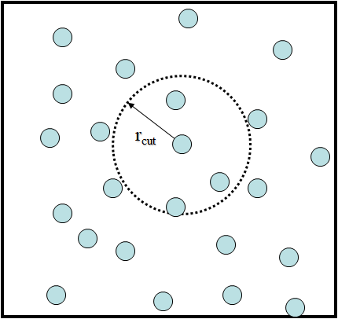
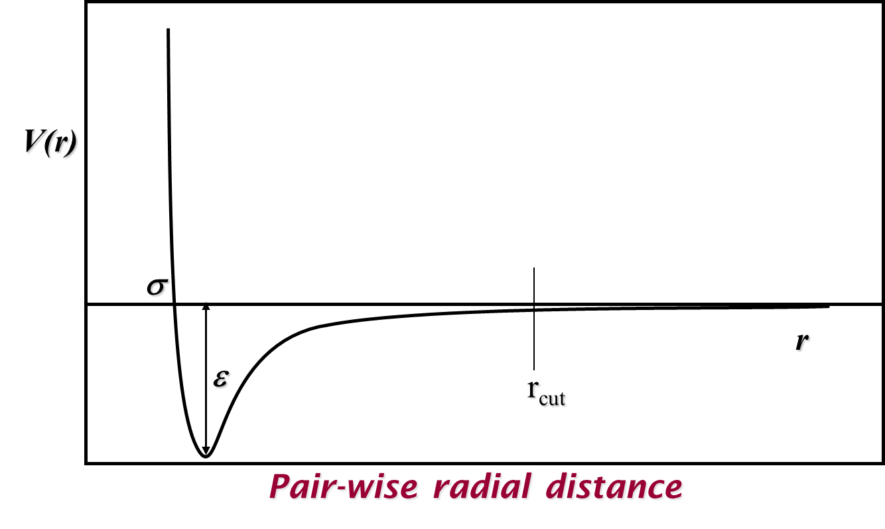
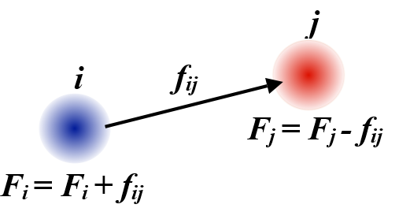

Molecular dynamics basics¶
A simple example of system that can be modelled using MD - shown here as an illustration - is argon in a periodic box.
{kind=link}
Each particle represents an atom of argon and interacts with others by means of a pair potential. An example of a simple potential that works for argon is the Lennard-Jones potential:
where \(\epsilon\) is the magnitude of the potential well (the minimum possible potential value) and \(\sigma\) is the distance where the potential equals zero. Illustrated in the graph below, this potential models both the Pauli exclusion principle with repulsions at short distances and attractive van der Waals forces at longer distances.
A maximum cutoff distance between particle pairs \(r_{cut}\) is usually selected for calculating pair potentials and their resulting forces to make these calculations more feasible and computationally efficient. While this can lead to discontinuities in both properties depending on the pair potential in use, we can mitigate these either by using (mean field) long-range corrections or by shifting and/or truncating the potential to be zero at the cutoff.
{kind=link}
The choice of pair potential enables us to define a Lagrangian for the system which is also based on the particles’ kinetic energy):
as well as determine the forces acting on both particles in a pair:
which basically means the forces acting on two particles \(i\) and \(j\) are the derivatives of the potential function \(V\) with respect to the distance between them \(r_{ij}\). Note that these forces are applied along the vector between the two particles, \(\vec{r}_{ij} = \vec{r}_j - \vec{r}_i\), and, according to Newton’s third law, are equal (in value) and opposite (in direction). The equal and opposite forces between pairs of atoms mean that the total momentum for the system \(\sum_i m_i \vec{v}_i\) cannot change and its centre-of-mass position \(\frac{\sum_i m_i \vec{r}_i}{\sum_i m_i}\) should remain fixed, provided no external forces or changes to particle velocities are applied.
{kind=link}
Note
The direction for the vector between a pair of particles ultimately does not make a difference to the forces acting on each particle, although in practice calculations need to use the selected sign convention consistently.
From Newton’s second law, the net force acting on each particle, \(\vec{F}_i = m_i \frac{\partial \vec{v}_i}{\partial t} = \sum_{j \neq i} \vec{f}_{ij}\), is used to determine its motion by integrating over time:
Note
In molecular simulations, the time interval \(dt\) (or \(\Delta t\)) is also called the timestep. It must be small enough to make sure the position of an atom does not travel too far and ‘jump over’ another atom that is located along the direction of the atom’s movement. In practice, \(dt\) has a typical value from 0.5 fs to 2.0 fs (femtosecond).
For example, to set a timestep of 1.5 fs (0.0015 ps) in DL_POLY, this is done in the CONTROL file as follows:
timestep 0.0015 ps
(This will work for all versions of DL_POLY, although versions prior to DL_POLY_5 will ignore ps.)